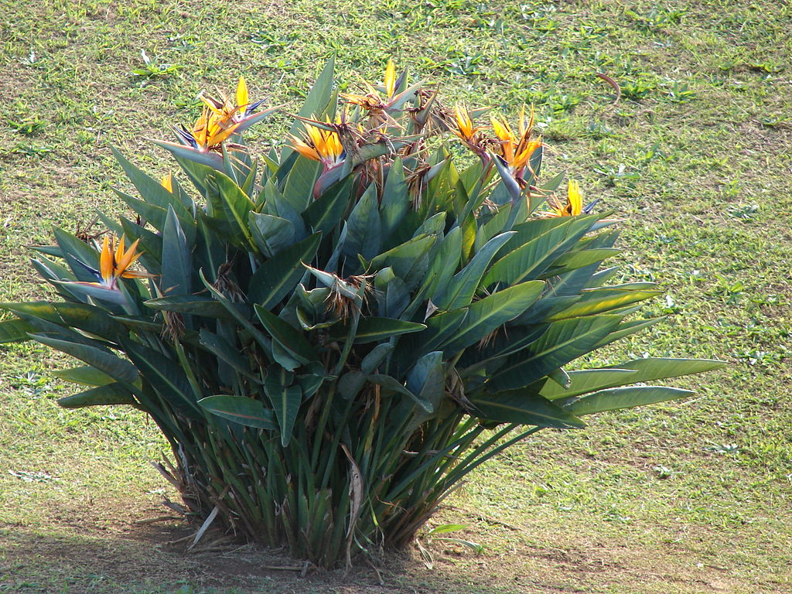

Про цветочки и не только!
Телефон: 89169996768
Почта: nimi9992@mail.ru

Всё, что вы хотели знать,
но боялись спросить,
про домашние растения!
но боялись спросить,
про домашние растения!
Про цветочки и не только!
Телефон: 89169996768
Почта: nimi9992@mail.ru
Стрелиция
Описание
Многолетние растения, с одревесневающими стеблями, либо травянистые без стеблей, формирующие плотные группы многочисленных побегов. Листья крупные, расположены супротивно в два ряда в одной плоскости, образуя "веер". Листовая пластинка цельная, голубовато-зеленая, кожистая, у вида стрелиция ситниковая отсутствует, листья редуцированы до цилиндрических черешков. Соцветия с одним или несколькими красновато-коричневыми или бордовыми прицветниками-покрывалами в форме ладьи, внутри которой находятся цветки, раскрывающиеся поочередно. Цветки эффектные, специфической формы. Венчик из 6 долей — три наружных (чашелистики) раздельные, белые или оранжевые, три внутренних (лепестки) голубые, сиреневыатые или белые, сросшиеся в форме наконечника стрелы, внутри которого заключены тычинки и пестик. Плод — трехкамерная одревесневающая коробочка. Семена шаровидные, твердые, гнездовые, имеют ярко-оранжевый ворсистый присемянник.
